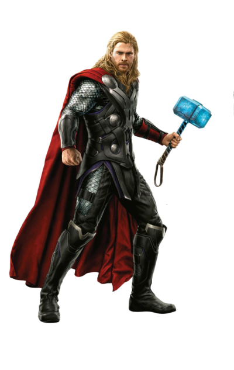

Kapitan Ameryka

Kapitan Ameryka, czyli Steve Rogers, to postać komiksowa i filmowa, stworzona przez Joe Simona i Jacka Kirby'ego w 1941 roku. Jest to weteran II wojny światowej, który po otrzymaniu "serum superżołnierza" zyskał szczyt ludzkiej sprawności fizycznej i stał się symbolem amerykańskiego patriotyzmu. Jego głównym atrybutem jest tarcza wykonana z vibranium.
Iron Man

Tony Stark, znany jako Iron Man, to genialny wynalazca i miliarder, który wykorzystuje swoje technologiczne zbroje, by walczyć ze złem. Jest on współzałożycielem Avengers, a jego firma Stark Industries dostarcza nowoczesne technologie.
Thor

Thor, Bóg Piorunów, syn Odyna z Asgardu. Posiada młot Mjöllnir, kontroluje pioruny i jest jednym z założycieli Mścicieli.